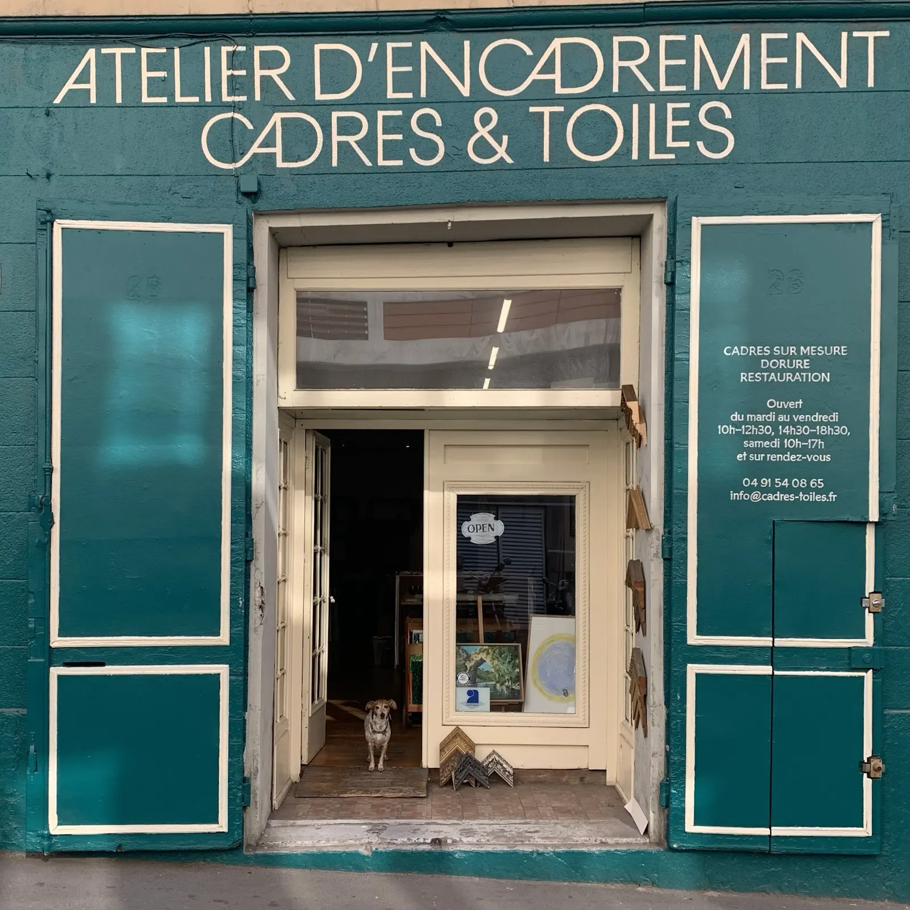
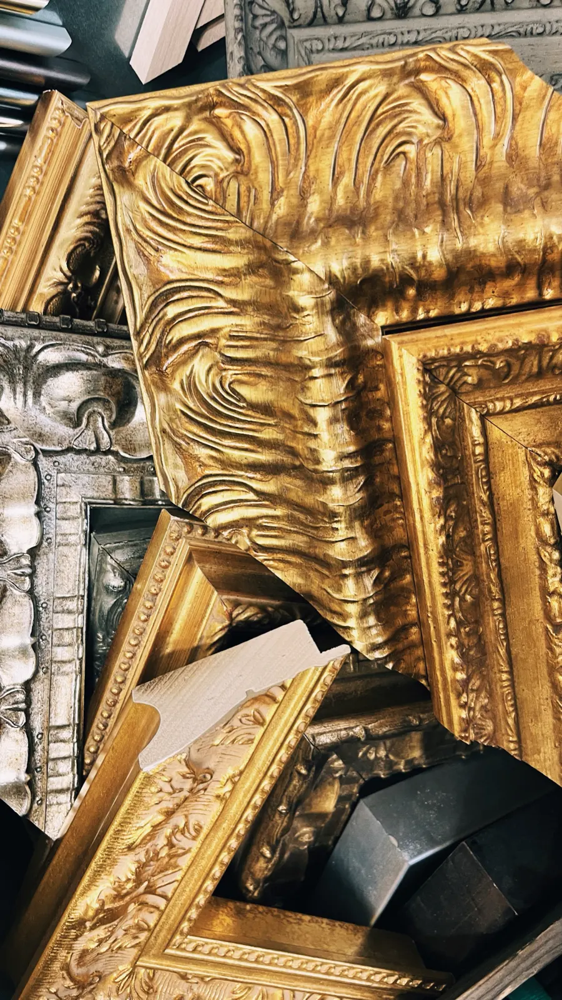
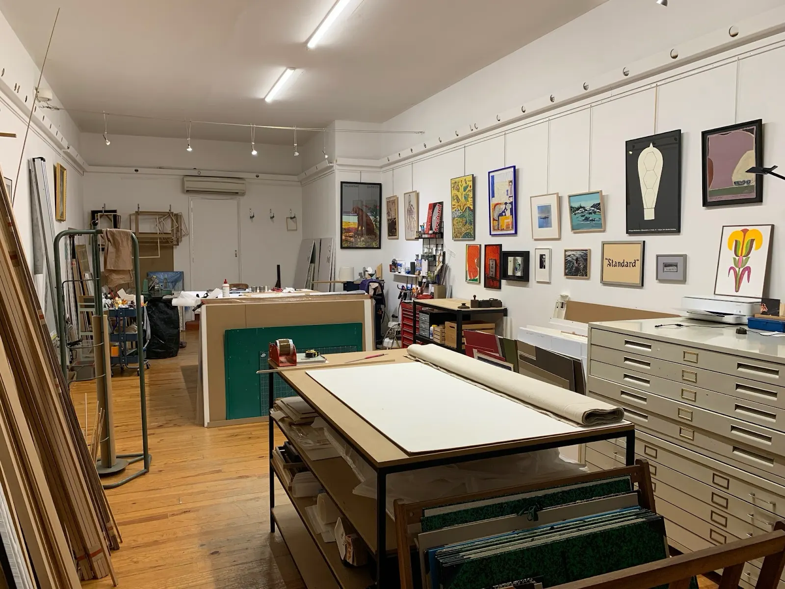
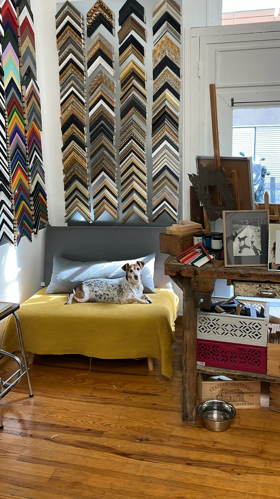
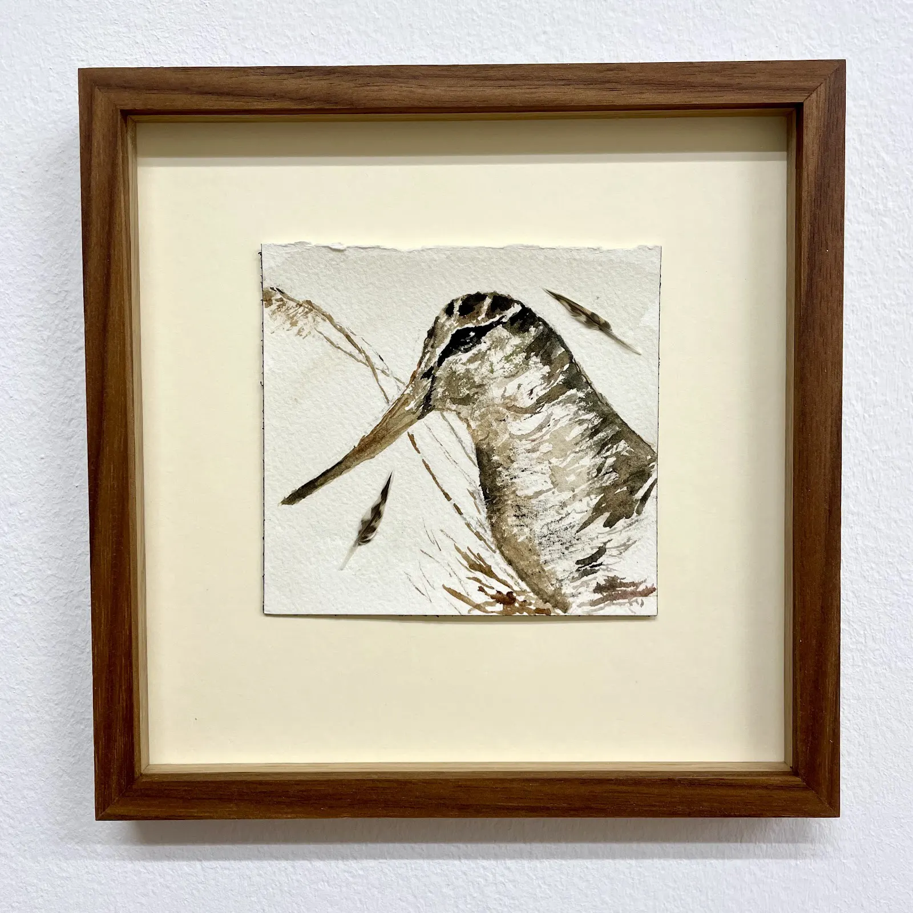
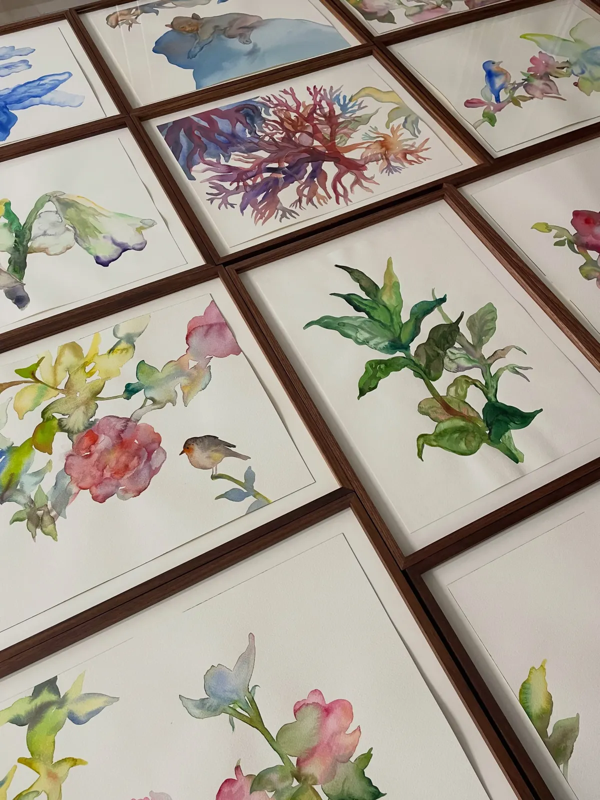
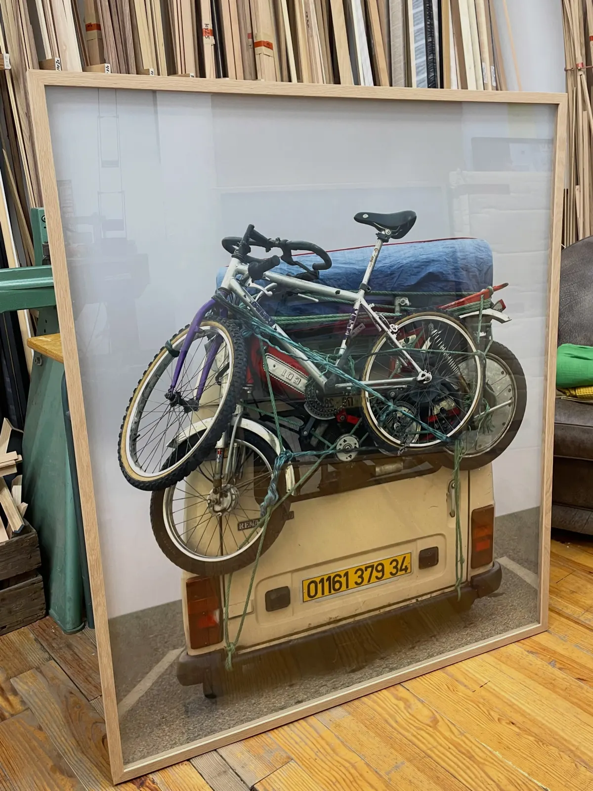
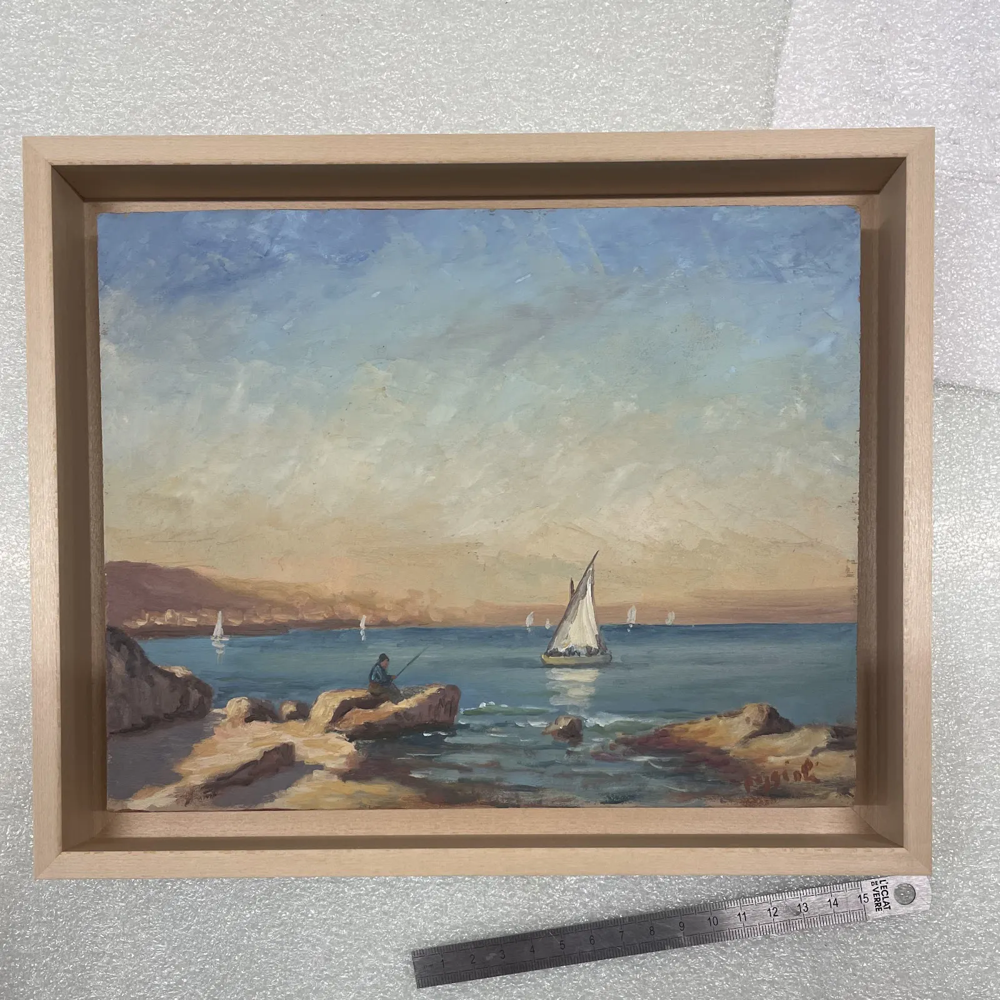

Cadres sur mesure, dorure et restauration.
Cadres & Toiles est un atelier d'encadrement du boulevard Notre-Dame, à Marseille. Aquarelles, dessins, photographies, affiches grand format : chaque pièce reçoit son cadre, pour les particuliers comme pour les artistes et les galeries.
5,0 sur 5 · 74 avis Google
La devanture26 boulevard Notre-Dame, Marseille
- Atelier d'encadrementMarseille, 13006
- Cadres sur mesureDorure, restauration
- Petits et grands formatsDont des affiches de 100 × 140 cm
- ParticuliersArtistes et galeries

Le bon cadre, jusqu'au dos du tableau.
Le choix de la baguette, du verre, du montage et de l'accrochage dépend de ce que l'on encadre. Quelques réalisations récentes de l'atelier, telles qu'il les décrit.
Boîtes en noyer
Pour une série d'aquarelles : boîtes en noyer, verre antireflet UV70.
Montage boîte en chêne massif
Pour une série de photographies : montage boîte direct, chêne massif 20 × 30, lattes 7 × 10, plexiglas, attache rail.
Grand format
Une affiche de 100 × 140 cm : baguette noire 20 × 30 mm, dos en polypropylène alvéolé, châssis à pente pour un accrochage à taquet français.
Caisse américaine
Pour une marine : caisse américaine en bois clair.
Dorure et restauration
Des moulures anciennes, dorées et argentées, et le savoir-faire de la dorure et de la restauration.


Un atelier ouvert sur la rue.
Derrière la devanture vert canard, tout est sous les yeux : les échantillons de baguettes, la table de coupe, les meubles à plans et les cadres aux murs.
- Un mur de baguettes pour choisir sur pièce
- Des moulures anciennes dorées et argentées
- Verres antireflets, plexiglas, passe-partout
- Livraison possible
Pour vos œuvres, et pour celles des artistes.
Des séries pour des artistes et des galeries, et des pièces uniques pour les particuliers. Quelques encadrements sortis de l'atelier.




Passer à l'atelier.
Apportez votre pièce au 26 boulevard Notre-Dame, dans le 6e, pour choisir le cadre, le verre et le montage. L'atelier reçoit aussi sur rendez-vous.
Les horaires d'ouverture sont à jour sur la fiche Google de l'atelier.